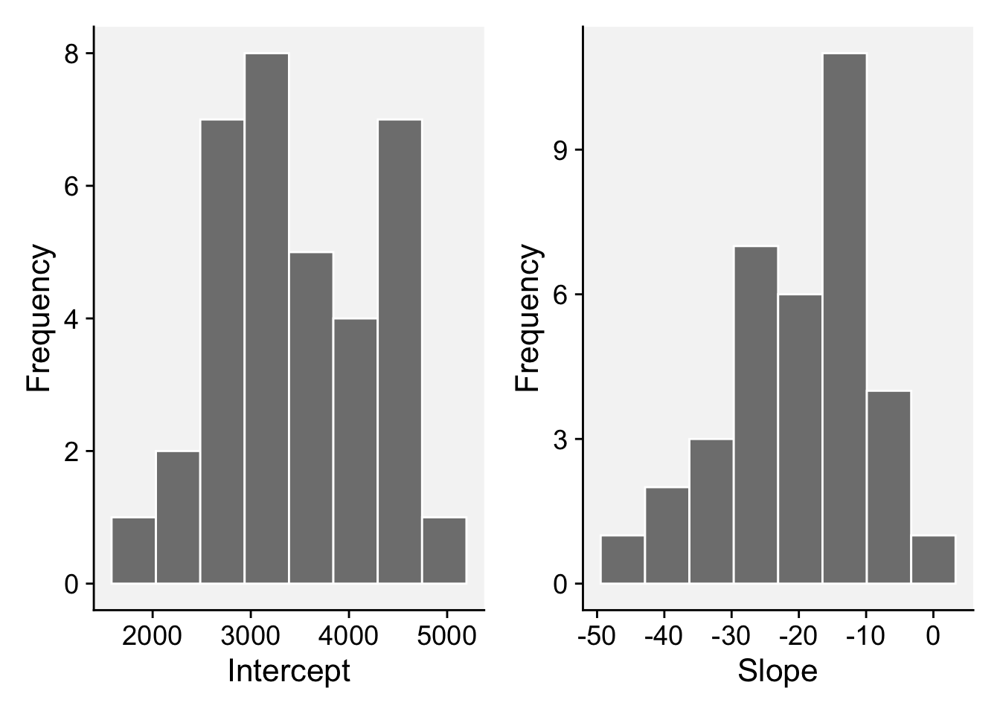

library(r4pde)
wm <- WhiteMoldSoybean17 Statistical models
17.1 Introduction
When we aim to empirically describe the relationship between yield (either in absolute terms represented as [YLD], or in relative terms such as relative yield [RY] or relative yield loss [RL]) and disease intensity (denoted as y), the most straightforward approach is to employ a single metric of disease intensity. This could be in the form of disease incidence, severity, electronic measurements, among others. A linear model, as suggested by (Madden et al. 2007), often proves to be a suitable choice for this purpose. Such models are frequently termed as single-point or critical-point models. The nomenclature stems from the fact that the assessment of the disease occurs at one pivotal moment during the epidemic. This moment is typically chosen because it’s when the disease’s impact correlates with yield outcomes.
A version of the equation, for the absolute quantity of yield (YLD), is written as:
\(YLD = 𝛽_0 - 𝛽_1y\)
where \(𝛽_0\) and \(𝛽_1\) are parameters and y is a disease measure. For this particular case, the intercept is a yield property of a given plant genoptye in a given environment when the disease of interest is absent (or the attainable yield). The (negative) slope represents the change (reduction) in yield with change (increase) in disease intensity.
The interpretation of the model parameters depends on the specific yield variable being related to disease. If relative yield loss is related to disease, the slope will be positive, because the loss (relative decrease in yield) will increase with the increase in disease intensity assessed at the critical time. Anyway, the differences in the intercept reflect the environmental effect on yield when disease is absent, while varying slopes reflect the environmental effect on yield response to disease (Madden et al. 2007).
17.2 Example 1: single study
We demonstrate the fitting of linear regression models (assuming a straight line relationship) to crop loss data on the effects of white mold on soybean yield (Lehner et al. 2016). This is the same data illustrated in the previous chapter. Let’s load the data and assign them to a data frame named as wm.
First, we will work with data from a single trial (trial 1).
library(tidyverse)
wm1 <- wm |>
dplyr::select(study, inc, yld) |>
filter(study %in% c(1))
head(wm1, 13)# A tibble: 13 × 3
study inc yld
<dbl> <dbl> <dbl>
1 1 76 2265
2 1 53 2618
3 1 42 2554
4 1 37 2632
5 1 29 2820
6 1 42 2799
7 1 55 2503
8 1 40 2967
9 1 26 2965
10 1 18 3088
11 1 27 3044
12 1 28 2925
13 1 36 286717.3 Linear regression
Assuming a linear relationship between yld and inc, we can employ a linear regression model for trial 1 using the lm() function.
lm1 <- lm(yld ~ inc, data = wm1)
jtools::summ(lm1)| Observations | 13 |
| Dependent variable | yld |
| Type | OLS linear regression |
| F(1,11) | 46.86 |
| R² | 0.81 |
| Adj. R² | 0.79 |
| Est. | S.E. | t val. | p | |
|---|---|---|---|---|
| (Intercept) | 3329.14 | 86.84 | 38.33 | 0.00 |
| inc | -14.21 | 2.08 | -6.85 | 0.00 |
| Standard errors: OLS |
In the summary output, we can notice that the model explains a statistically significant and substantial proportion of variance. The model’s intercept, corresponding to inc = 0, is at 3329.14. The effect of inc is statistically significant and negative ( beta = -14.21). In another words, 140.21 kg is lost for each 10 percent point increase in incidence, given the attainable yield of 3,329.14 kg.
17.4 Damage coefficients
Damage curves offer a visual representation of how plant diseases can impact a given crop in terms of yield loss. When we want to normalize these effects to better compare across different systems or conditions, it is useful to express these curves in relative terms rather than absolute ones. To achieve this, we can adjust the derived slope by dividing it by the intercept. This step essentially scales the rate of damage in relation to the baseline or the starting point (when there’s no damage). By subsequently multiplying the result by 100, we convert this value into a percentage. This percentage is termed the “relative damage coefficient”. What makes this coefficient particularly useful is its ability to standardize the measurement of damage, facilitating comparisons across diverse pathosystems.
Two plots can be produced, one that shows the effect of the disease on the relative yield and the other on the effect on yield loss (which in this case represents a positive slope). Both representations can be found in the literature. Let’s use the estimated coefficients and produce these two plots.
# Extract the coefficients from model fit
dc <- (lm1$coefficients[2]/lm1$coefficients[1])*100
dc inc
-0.426775 # Plot the relative damage curve
x = seq(0,100,0.1)
y = seq(0,100,0.1)
dat <- data.frame(x,y)
p1 <- dat |>
ggplot(aes(x,y))+
theme_r4pde(font_size = 14)+
geom_point(color = "NA")+
scale_y_continuous(expand = c(0,0))+
scale_x_continuous(expand = c(0,0))+
geom_abline(aes(intercept = 100, slope = dc))+
labs(x = "Incidence (%)", y = "Yield (%)")+
annotate(geom = "text", x = 60, y = 60, label = "DC = -0.42")
p1 
# Plot for the relative yield decrease
dc2 <- (-lm1$coefficients[2]/lm1$coefficients[1])*100
dc2 inc
0.426775 dat <- data.frame(x,y)
p2 <- dat |>
ggplot(aes(x,y))+
theme_r4pde(font_size = 14)+
geom_point(color = "NA")+
scale_y_continuous(expand = c(0,0))+
scale_x_continuous(expand = c(0,0))+
geom_abline(aes(intercept = 0, slope = dc2))+
labs(x = "Incidence (%)", y = "Yield loss (%)")+
annotate(geom = "text", x = 60, y = 60, label = "DC = 0.42")
p2 
17.5 Example 2: Multiple studies
17.5.1 Introduction
When managing data sourced from multiple studies (or experiments), a naive and straightforward approach is to pool all the data and fit a “global” linear regression. This option, while efficient, operates under the assumption that the different studies share common underlying characteristics, which might not always be the case.
Another simplistic methodology entails running independent linear regressions for each trial and subsequently averaging the intercepts and slopes. While this provides a glimpse into the general behavior of the data, it potentially sidesteps important variations that exist between individual trials. This variation is crucial, as different trials could have unique environments, treatments, or experimental conditions, all of which can influence results.
Neglecting these variations can mask important nuances and lead to overgeneralized or inaccurate conclusions. In order to accommodate the inherent variability and structure present in multitrial data, researchers often turn to more refined analytical frameworks. Two such frameworks stand out in their ability to provide a nuanced view.
The first is a meta-analytic modelling. This approach synthesizes results across multiple studies to arrive at a more comprehensive understanding Madden and Paul (2011). In the context of linear regressions across multiple trials, the coefficients (both intercepts and slopes) from each trial can be treated as effect sizes Dalla Lana et al. (2015). The standard error of these coefficients, which reflects the precision of the estimate, can then be used to weight each coefficient, ensuring that more reliable estimates have greater influence on the overall mean. This method can also provide insights into heterogeneity across trials, and if required, moderators can be explored to account for this variability Lehner et al. (2016).
A second approach is to fit a random coefficients (mixed effects) models. This approach allows the intercepts and slopes to vary across different trials, treating them as random effects Madden and Paul (2009). By modeling the coefficients as random effects, we’re assuming they come from a distribution, and we aim to estimate the parameters of this distribution. This structure acknowledges that variability exists between different trials and allows for the sharing of information across trials, thereby improving the estimation.
Both methods have their strengths and are appropriate under different circumstances. The choice largely depends on the research question, data structure, and the assumptions one is willing to make.
17.5.2 Global regression
Let’s begin by fitting a “global regression”, but we might want to first inspect the damage curve withe the fit of the global regression model visually.
ggplot(wm, aes(inc, yld))+
theme_r4pde(font_size = 12)+
geom_point(shape = 1)+
stat_smooth(method = lm, fullrange=TRUE, se = TRUE, col = "black")+
ylab("Yield (kg/ha)")+
xlab("White mold incidence (%)")
A “global” regression can be performed using:
library(broom)
fit_global <- wm%>%
do(tidy(lm(.$yld ~ .$inc), conf.int=TRUE))
fit_global# A tibble: 2 × 7
term estimate std.error statistic p.value conf.low conf.high
<chr> <dbl> <dbl> <dbl> <dbl> <dbl> <dbl>
1 (Intercept) 3300. 56.5 58.5 5.14e-192 3189. 3411.
2 .$inc -9.26 2.11 -4.39 1.45e- 5 -13.4 -5.12The global intercept and slope were estimated as 3,299 kg/ha and -9.26 kg/p.p. (percent point), respectively.
17.5.3 Individual regressions
Now we can fit separate regressions for each trial.
ggplot(wm, aes(inc, yld, group = study))+
theme_r4pde(font_size = 12)+
geom_point(shape = 1)+
stat_smooth(method = lm, se = F, col = "black")+
ylab("Yield (kg/ha)")+
xlab("White mold incidence (%)")`geom_smooth()` using formula = 'y ~ x'
#facet_wrap(~ study, ncol = 7, scales = "fixed") To fit separate regression lines for each study and extract the coefficients, we can use the group_by() function along with do() and of the {dplyr} package and tidy() from {broom} package.
The data is first grouped by the study column. Then, for each study, a linear regression is fitted with yld as the response variable and inc as the predictor. The tidy function from the broom package is then used to extract the coefficients and confidence intervals for each regression line. The resulting output should give us a tidy dataframe with coefficients for each trial.
fit_all <- wm%>%
group_by(study) |>
do(broom::tidy(lm(.$yld ~ .$inc), conf.int=TRUE))
fit_all# A tibble: 70 × 8
# Groups: study [35]
study term estimate std.error statistic p.value conf.low conf.high
<dbl> <chr> <dbl> <dbl> <dbl> <dbl> <dbl> <dbl>
1 1 (Intercept) 3329. 86.8 38.3 4.60e-13 3138. 3520.
2 1 .$inc -14.2 2.08 -6.85 2.78e- 5 -18.8 -9.64
3 2 (Intercept) 2682. 48.6 55.2 8.55e-15 2575. 2789.
4 2 .$inc -6.93 1.49 -4.66 6.89e- 4 -10.2 -3.66
5 3 (Intercept) 4017. 61.6 65.2 1.37e-15 3882. 4153.
6 3 .$inc -18.6 1.71 -10.9 3.11e- 7 -22.4 -14.9
7 4 (Intercept) 2814. 151. 18.6 1.15e- 9 2481. 3147.
8 4 .$inc -43.5 16.8 -2.58 2.56e- 2 -80.5 -6.38
9 5 (Intercept) 3317. 234. 14.2 2.07e- 8 2802. 3832.
10 5 .$inc -21.2 5.69 -3.72 3.36e- 3 -33.7 -8.67
# ℹ 60 more rowsNow we can plot the distributions of each coefficient.
p3 <- fit_all |>
filter(term == "(Intercept)") |>
ggplot(aes(x = estimate))+
geom_histogram(bins = 8, color = "white", fill = "gray50")+
theme_r4pde()+
labs(x = "Intercept", y = "Frequency")
p4 <- fit_all |>
filter(term == ".$inc") |>
ggplot(aes(x = estimate))+
geom_histogram(bins = 8, color = "white", fill = "gray50")+
theme_r4pde()+
labs(x = "Slope", y = "Frequency")
library(patchwork)
p3 | p4
Let’s summarize the data on the slopes and intercept, using the summary() function.
fit_all |>
filter(term == "(Intercept)") |>
ungroup() |>
dplyr::select(estimate) |>
summary() estimate
Min. :1760
1st Qu.:2863
Median :3329
Mean :3482
3rd Qu.:4080
Max. :4923 fit_all |>
filter(term == ".$inc") |>
ungroup() |>
dplyr::select(estimate) |>
summary() estimate
Min. :-43.455
1st Qu.:-27.676
Median :-16.926
Mean :-19.529
3rd Qu.:-13.054
Max. : 2.712 17.5.4 Meta-analysis
Here the objective is to combine the estimates from multiple studies or trials into a single overall estimate using a random-effects meta-analysis using {metafor} R package Viechtbauer (2010). The goal is to capture both the central tendency (i.e., the overall effect) and the variability (heterogeneity) among those individual estimates. Let’s first prepare data for analysis and then run separate meta-analysis for the intercepts and slopes.
# data preparation
Intercepts <- fit_all |>
filter(term == "(Intercept)")
Slopes <- fit_all |>
filter(term == ".$inc")
# Model for the intercepts
library(metafor)
ma1 <- rma(yi = estimate, sei = std.error, data = Intercepts)
summary(ma1)
Random-Effects Model (k = 35; tau^2 estimator: REML)
logLik deviance AIC BIC AICc
-274.9958 549.9916 553.9916 557.0444 554.3787
tau^2 (estimated amount of total heterogeneity): 607939.3750 (SE = 150941.5658)
tau (square root of estimated tau^2 value): 779.7047
I^2 (total heterogeneity / total variability): 98.88%
H^2 (total variability / sampling variability): 89.38
Test for Heterogeneity:
Q(df = 34) = 3402.9633, p-val < .0001
Model Results:
estimate se zval pval ci.lb ci.ub
3479.3087 133.3611 26.0894 <.0001 3217.9258 3740.6917 ***
---
Signif. codes: 0 '***' 0.001 '**' 0.01 '*' 0.05 '.' 0.1 ' ' 1# Model for the slopes
ma2 <- rma(yi = estimate, sei = std.error, data = Slopes)
summary(ma2)
Random-Effects Model (k = 35; tau^2 estimator: REML)
logLik deviance AIC BIC AICc
-127.4587 254.9174 258.9174 261.9701 259.3045
tau^2 (estimated amount of total heterogeneity): 65.0917 (SE = 22.6013)
tau (square root of estimated tau^2 value): 8.0679
I^2 (total heterogeneity / total variability): 82.28%
H^2 (total variability / sampling variability): 5.64
Test for Heterogeneity:
Q(df = 34) = 151.3768, p-val < .0001
Model Results:
estimate se zval pval ci.lb ci.ub
-18.1869 1.6648 -10.9245 <.0001 -21.4499 -14.9240 ***
---
Signif. codes: 0 '***' 0.001 '**' 0.01 '*' 0.05 '.' 0.1 ' ' 1In the output above, we can notice that there is considerable heterogeneity in both the intercepts and slopes (P < 0.01 for Q statistics), meaning that there may be moderators variables that, if added to the model, could potentially reduce the variance. The estimates for the intercept and slopes were 3479.30 kg/ha and -18.18 kg/p.p. (percentage point), respectively.
17.5.5 Random coefficients model
Among several options in the R ecosystem, the {lme4} package in R offers a comprehensive suite of tools to fit linear mixed-effects models Bates et al. (2015). When analyzing data from multiple trials using this package, it allows for both intercepts and slopes to vary across the trials by treating them as random effects. By doing so, the inherent assumption is that these coefficients (intercepts and slopes) are drawn from certain distributions, and the goal becomes estimating the parameters of these distributions. This modeling technique acknowledges and captures the variability present across different trials. Importantly, by treating the coefficients as random effects, this enables the sharing of information across trials. This not only provides a more holistic understanding of the underlying data structure but also enhances the precision and robustness of the coefficient estimates.
The lmer() function allows to fit a mixed model with both the fixed (inc) and random effects (inc | study).
library(lme4)
rc1 <- lmer(yld ~ inc + (inc |study), data = wm,
REML = F)
summary(rc1)Linear mixed model fit by maximum likelihood ['lmerMod']
Formula: yld ~ inc + (inc | study)
Data: wm
AIC BIC logLik deviance df.resid
5319.4 5343.1 -2653.7 5307.4 376
Scaled residuals:
Min 1Q Median 3Q Max
-3.7078 -0.5991 -0.0295 0.5077 3.2364
Random effects:
Groups Name Variance Std.Dev. Corr
study (Intercept) 557573.08 746.708
inc 36.85 6.071 -0.29
Residual 37228.73 192.947
Number of obs: 382, groups: study, 35
Fixed effects:
Estimate Std. Error t value
(Intercept) 3455.432 128.063 26.98
inc -17.236 1.451 -11.88
Correlation of Fixed Effects:
(Intr)
inc -0.300
optimizer (nloptwrap) convergence code: 0 (OK)
Model failed to converge with max|grad| = 0.416806 (tol = 0.002, component 1)17.5.6 Conclusion
Results from various regression methods show that the calculated damage coefficients fall within the range of -0.28 to -0.56 (see table below). This range of values represents the extent to which damage is influenced by the method in consideration. The most straightforward method, often referred to as the naive approach, produced the most conservative estimate, positioning the damage coefficient at the lower bound of the observed range. In stark contrast, computing the mean values from multiple individual regressions yielded a dc that topped the range, signifying a greater estimated impact.
| Model | intercept | slope | damage coefficient |
|---|---|---|---|
| Global regression | 3299.6 | -9.261 | -0.28 |
| Mean of regressions | 3482 | -19.529 | -0.56 |
| meta-analysis | 3479.3 | -18.1869 | -0.52 |
| mixed-models | 3455.43 | -17.236 | -0.49 |
However, it’s worth noting that the coefficients derived from the more advanced techniques - meta-analysis and mixed-models - were quite congruent. Their close alignment suggests that both methodologies, while operating on different principles, capture the underlying dynamics of the data in somewhat analogous ways. A prominent advantage of employing these advanced techniques is their ability to encapsulate and quantify uncertainty. This capability is crucial in scientific analyses as it provides a clearer understanding of the confidence levels associated with the derived coefficients. By being able to measure and articulate this uncertainty, researchers can ensure their interpretations and subsequent decisions are founded on a solid empirical base.